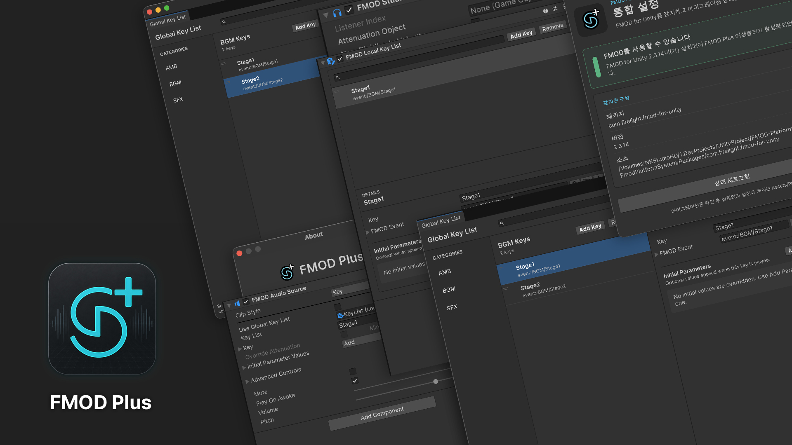

FMOD Plus
FMOD Plus는 FMOD for Unity를 Unity의 기본 AudioSource와 비슷한 흐름으로 사용할 수 있게 해 주는 런타임 컴포넌트와 에디터 도구 모음입니다.

FMODAudioSource, Global/Local Key List, Command Sender와 Event Trigger를 사용하면 게임플레이 코드를 개별 FMOD Event 경로에 직접 결합하지 않고 일반적인 오디오 동작을 구성할 수 있습니다. Setup 창은 FMOD for Unity 설치 상태를 감지하고 Assets 기반 Integration을 Embedded UPM 패키지로 마이그레이션할 수도 있습니다.
주요 기능
FMODAudioSource를 이용한 AudioSource 방식 Event 재생- 검색 가능한 AMB, BGM, SFX Global Key List
- GameObject별 Local Key List
- Event 또는 Key 기반 명령과 Unity 생명주기 Trigger
- 초기 FMOD Parameter Override
- FMOD 설치 감지와 안전 검사를 포함한 Embedded UPM 마이그레이션
- Fast Enter Play Mode 대응
처음 사용하는 경우 요구 사항, 설치, 시작하기 순서로 읽으세요.
Note
이 문서는 FMOD Plus 1.7.0부터 시작합니다. 이전 릴리스는 변경 내역에 보존하지만 별도의 매뉴얼 버전은 제공하지 않습니다.